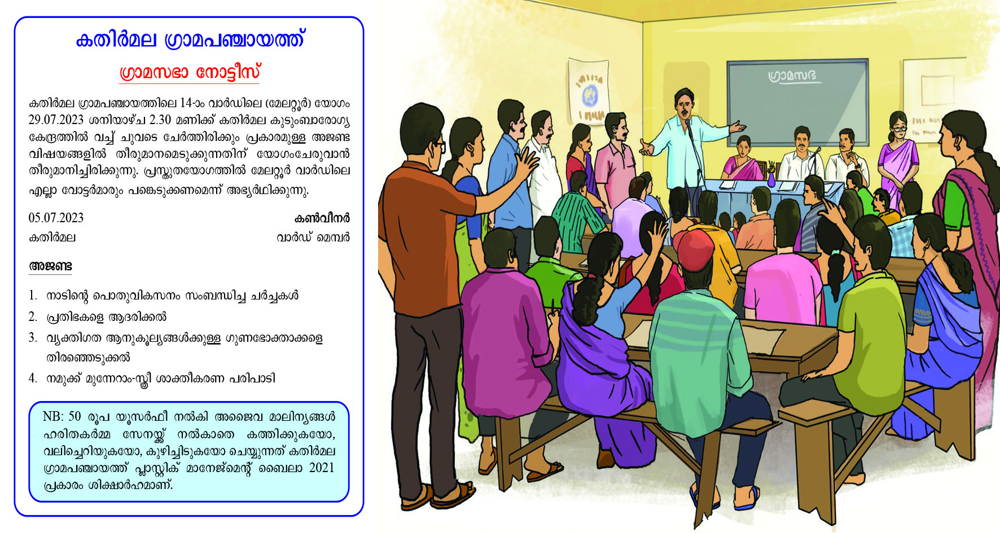
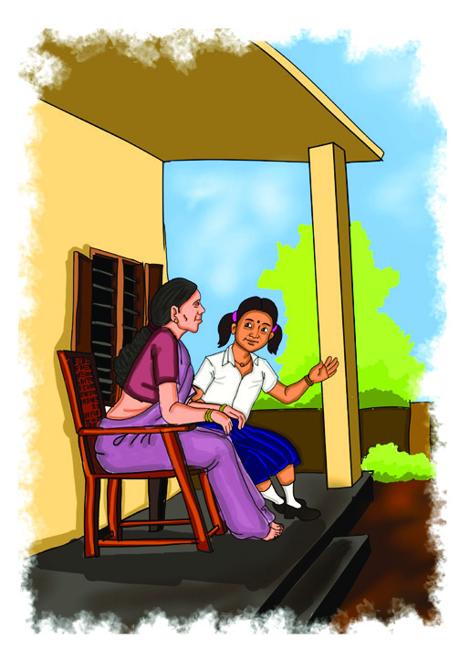
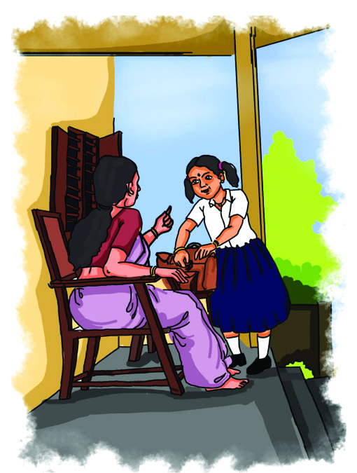
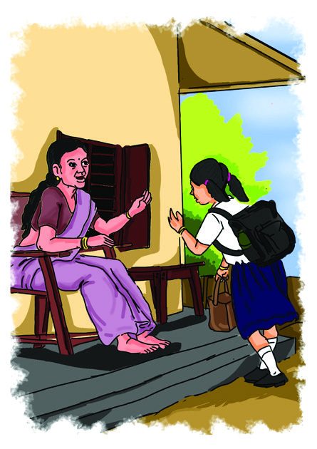
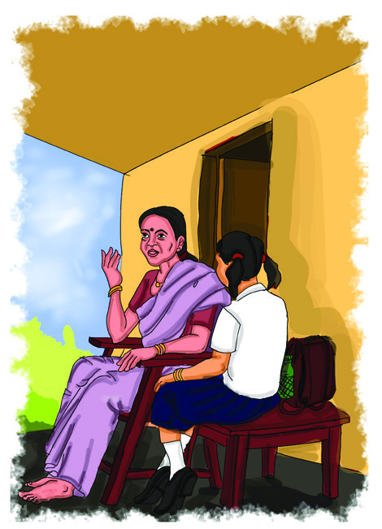

സാാമൂൂഹ്യയശാാസ്ത്രംം
ഭാഗം - 2
സ്റ്റാാൻഡേർഡ് VII
കേuരളസർക്കാാർ
പൊൊതുുവിിദ്യാæാഭ്യാæാസവകുുപ്പ്്
തയ്യാാറാാക്കിിയത്
സംസ്ഥാാന വിിദ്യാ�ാഭ്യാ�ാസ ഗവേ�ഷണ പരിിശീലന സമിിതി (SCERT) കേേsരളംം
2024
Page 1
Page 2

ദേ�ശീീയഗാനം
ജനഗണമന അധിിനായക ജയഹേ�
ഭാാരതഭാാഗ്യവിിധാതാ,
പഞ്ചാാബസിന്ധുു ഗുജറാാത്ത മറാാഠാാ
ദ്രാാവിിഡ ഉത്ക്കല ബംഗാ,
വിിന്ധ്യഹിമാചല യമുനാഗംഗാ,
ഉച്ഛല ജലധിിതരംഗാ,
തവശുുഭനാാമേ� ജാഗേ�,
തവശുുഭ ആശിഷ മാഗേ�,
ഗാഹേ� തവ ജയഗാഥാാ
ജനഗണമംഗലദാായക ജയഹേ�
ഭാാരതഭാാഗ്യവിിധാതാ
ജയഹേ�, ജയഹേ�, ജയഹേ�,
ജയ ജയ ജയ ജയഹേ�!
Prepared by
State Council of Educational Research and Training (SCERT)
Poojappura, Thiruvananthapuram 695012, Kerala
Website : www.scertkerala.gov.in, e-mail : scertkerala@gmail.com
Typeset and design by : SCERT
First Edition - 2024
Printed at : KBPS, Kakkanad, Kochi-30
© Department of General Education, Government of Kerala
സാാമൂൂഹ്യയശാാസ്ത്രംം
7
പ്രതിജ്ഞ
ഇന്ത്യയ എൻ്റെź രാജ്യമാണ്. എല്ലാാ ഇന്ത്യയക്കാരും�ം എൻ്റെź സഹോ�ോദരീ
ീ
സഹോ�ോദര
ന്മാാരാണ്.
ഞാാന് എൻ്റെź രാജ്യത്തെ� സ്നേേǜഹിക്കുന്നുു; സമ്പൂൂർണ്ണവുംം� വൈൈവിിധ്യ
പൂർണ്ണവുമായ അതിൻ്റെź പാരമ്പര്യയത്തില് ഞാാന് അഭിമാനം കൊsൊള്ളുുന്നുു.
ഞാാന് എൻ്റെź മാതാപിതാക്കളെ�യുംം�
ഗുരുക്കന്മാാരെെയുംം�
മുതിര്ന്നവരെെയുംം�
ബഹുമാനിക്കുംം�.
ഞാാന് എൻ്റെź രാജ്യത്തിൻ്റെźയുംം� എൻ്റെź നാട്ടുുകാരുടെെയുംം� ക്ഷേേäമത്തിനുംം�
ഐശ്വര്യത്തിനുംം� വേ�ണ്ടിി പ്രയത്നിിക്കുംം�.
Page 3

പ്രിിയപ്പെƀട്ട കൂൂട്ടുകാരേ,
സാാമൂൂഹിിക ജീീവിിതത്തിിന്റെെźയുംംc വിിദ്യാDzാഭ്യാDzാസ വിികാസത്തിിന്റെെźയുംംc നിിലനിില്പിിനാ
ധാാരമാായ പഠനശാാഖയാണ്് സാാമൂൂഹ്യയശാാസ്ത്രംം. ഭൂതകാലത്തെ� അടിിസ്ഥാാനമാാക്കിി
സമൂൂഹത്തെ�
മുന്നോųോട്ടു നയിിക്കുന്നതിനുംംc പുതിയ കാലവുംംc ചുുറ്റുുപാടുകളും�ം
രൂപപ്പെƀടുത്തുന്ന വിിപരീത സാാഹചര്യയങ്ങളെ� മറിികടക്കുന്നതിനുംംc സാാമൂൂഹ്യയ
ശാാസ്ത്രപഠനത്തിിലൂടെെ കഴിിയേ�ണ്ടതുണ്ട്. ഭരണ
ഘടന മുന്നോųോട്ടുവയ്ക്കുുന്ന മൗലി
കാവകാാശങ്ങളെ� ശാാസ്ത്രീയ ചിന്തയോ�ോടെെ നടപ്പിലാക്കാനുംംc രാജ്യയത്തിിന്റെെź സമ്പദ്്
വ്യയവസ്ഥയെ� പരിപോ�ോഷിിപ്പിക്കുന്നതിനുമാവശ്യയമായ സാാധ്യയതകൾ കണ്ടെ�ത്തു
ു
ന്നതിനുംംc സാാമൂൂഹ്യയശാാസ്ത്രംം നമ്മെെƣ സഹാ
ായിക്കുന്നുണ്ട്.
പാർശ്വവത്്ക്കരിിക്കപ്പെƀടുന്ന എല്ലാാ സാാമൂൂഹിിക വിിഭാാഗങ്ങളെ�യുംം
c ഉൾക്കൊ�ൊള്ളുുന്ന
മനഃസ്ഥിതി വളർത്തുന്നതിനുംംc നാടിിന്റെെź ഉന്നതമായ സാംസ്കാാരിക-മതനിിരപേ�ക്ഷ
പാരമ്പര്യയങ്ങളെ� കാത്തുസൂക്ഷിക്കുന്നതിനുംംc നമുുക്ക് സമൂൂഹത്തെ�
കുറിിച്ച്് വ്യയക്ത
മായ ധാാരണ ഉണ്ടാകണംം. ഭൂമിശാാസ്ത്രപരമാായ സവിിശേ�ഷ
തകൾ കണ്ടെ�ത്താ
ാനുംംc
പ്രകൃതി സംംരക്ഷണത്തിിനുംംc കാർഷിിക സംംസ്കൃതി അഭിവൃദ്ധിിപ്പെƀടുത്താനുംംc ഒരു
സാാമൂൂഹ്യയശാാസ്ത്ര വിിദ്യാDzാർഥിിക്ക് കഴിിയേ�ണ്ടതുണ്ട്.
പരിഷ്കരിിച്ച കേ�രള പാഠ്യയപദ്ധതിി ചട്ടക്കൂട് 2023 മുന്നോųോട്ടുവയ്ക്കുുന്ന ഇത്തരംം
പുരോോഗമന കാഴ്ചപ്പാടുകൾ ഉൾപ്പെƀടുത്തിിക്കൊ�ൊണ്ടുുള്ള ഏഴാം� ക്ലാാസിലെ�
സാാമൂൂഹ്യയശാാസ്ത്രംം ഭാാഗംം 2 നിിങ്ങളുുടെെ ജീീവിിത വിിജയത്തിിന് മുതൽക്കൂട്ടാകു
മെെന്ന്് പ്രത്യാാ�ശിക്കുന്നു.
സമൂൂഹത്തെ�
കൂൂടുതൽ
ചലനാത്മകമാാക്കുന്നതിനുംംc
മാനവിികമൂൂല്യയങ്ങൾ
ഉയർത്തിിപ്പിടിിക്കുന്നതിനുംംc ഈ പാഠപുസ്തകംം നിിങ്ങളെ� സഹാ
ായിക്കുമെെന്ന്്
ഉറപ്പുണ്ട്.
സ്നേേǜഹത്തോ�ോടെെ
,
ഡോോ. ജയപ്രകാശ് ആർ.കെെs.
ഡയറക്ടർ
എസ്.സി.ഇ.ആർ.ടിി., കേ�രളംം
Page 4

പാഠപുസ്തകരചനാാസമിിതി
അക്കാദമിിക് കോ�ോഡിിനേ�റ്റർ
ഡോോ. കെെs.എൻ. ഗണേ�ഷ്
ചെ�യർമാൻ, കേ�രള കൗൗൺസിൽ ഫോോർ ഹിിസ്റ്റോǢോറിിക്കൽ റിിസർച്ച്്
ഡോോ. ബൈൈജു കെെs.സി.
വൈൈസ്് ചാൻസലർ (ഇൻ-ചാർജ്), കേ�ന്ദ്ര സർവകലാാശാാല, കാസറഗോ�ോഡ്
്
ഡോോ. അനിൽ ഡി.
റിിസർച്ച്് ഓഫിസർ, എസ്.സി.ഇ.ആർ.ടിി., കേ�രളംം
അനൂപ് കെെs.പി.
പി.എംം.എസ്.എ,പി.ടിി.എച്ച്്.എസ്.എസ്. കക്കോ�ോവ്
്,
മലപ്പുറംം
എം. ജോ�ോൺബായ്
എംം.വിി.എച്ച്്.എസ്.എസ്., അരുമാനൂർ, തിരുവനന്തപുരംം
ജോ�ോൺസൺ റ്റിി.വൈൈ.
സി.എസ്.ഐ.എച്ച്്.എസ്.എസ്. ഫോോർ ഡെ�ഫ്
്, വാളകംം
കൃഷ് ണൻ കുറിയ
എ.ഇ.ഒ. (റിിട്ട.), കണ്ണൂൂർ സൗൗത്ത്
മുസ്തഫ മറ്റത്തൂർ
ടീച്ചർ എഡ്യൂൂ�ക്കേ�റ്റർ, ഗവ: ഇൻസ്റ്റിറ്റ്യൂDzൂട്ട് ഓഫ് ടീച്ചർ
എഡ്യൂൂ�ക്കേ�ഷൻ, മലപ്പുറംം
നിഷ എം.എസ്.
പി.എച്ച്്.എസ്.എസ്., മെെഴുുവേ�ലിി, പത്തനംംതി
ിട്ട
റ്റിി.എസ്. നിഷ
എസ്.എൻ.വിി.യു.പി.എസ്., മരുുതമൺപള്ളി, കൊ�ൊല്ലംം
പ്രേം�ംജിത്ത് സുരേ�ഷ്്ബാബു
ആർട്ടിസ്റ്റ്
പ്രിയ എസ്.എസ്.
ജി.ബിി.എച്ച്്.എസ്.എസ്., മിതിർമല, തിരുവനന്തപുരംം
രാജൻ പി.പി.
ട്രെെğയിനർ, ബിി.ആർ.സി., മലപ്പുറംം
രാജൻ കുളങ്ങര
ഇരിങ്ങണ്ണൂൂർ എച്ച്്.എസ്.എസ്., വടകര
, കോ�ോഴിിക്കോ�ോട്്
ഷാൻലാൽ എ.ബി.
എച്ച്്.എസ്.എസ്.ടിി., ജ്യോ�ോ�ഗ്രഫി,
പി.എൻ.എംം. ഗവ: എച്ച്്.എസ്സ്്. എസ്സ്്., കൂൂന്തല്ലൂർ,
ചിറയിിൻകീഴ്
ഡോോ. പി.പി. അബ്ദുുൾ റസാാക്
അസോ�ോസിിയേ�റ്റ്് പ്രൊ�ൊഫസ
ർ (റിിട്ട.)
ഡിപ്പാർട്ട്മെെന്റ്് ഓഫ് ഹിിസ്റ്റിി,
പി.എസ്.എംം.ഒ. കോ�ോളേ�ജ്്, തിരൂരങ്ങാടിി
ഡോോ. നന്ദകുമാർ ബി.വിി.
അസിസ്റ്റന്റ് പ്രൊ�ൊഫസ
ർ, ഡിപ്പാർട്ട്മെെന്റ്് ഓഫ് ഹിിസ്റ്റിി,
എസ്.എൻ. കോ�ോളേ�ജ്്, വർക്കല
ഡോോ. അനീഷ് വിി.ആർ.
അസിസ്റ്റന്റ് പ്രൊ�ൊഫസ
ർ,
ഡിപ്പാർട്ട്മെെന്റ്് ഓഫ് പൊ�ൊളി
ിറ്റിക്കൽ സയൻസ്,
എസ്.എ.ആർ.ബിി.ടിി.എംം. ഗവ: കോ�ോളേ�ജ്്, കൊ�ൊയി
ിലാണ്ടി
ചെ�യർപേ�ഴ്്സൺ
അവൈൈസർ
വിിദഗ്്ധർ
അംഗങ്ങൾ
സംസ്ഥാാന വിിദ്യാ�ാഭ്യാ�ാസ ഗവേ�ഷണ പരിിശീലന സമിിതി (SCERT)
വിിദ്യാDzാഭവൻ, പൂജപ്പുര, തിരുവനന്തപുരംം 695 012
Page 5


8. അധിികാരം ജനങ്ങൾക്ക്....................................................................................................119-131
9. ഭൂൂമിയെ� അറിയാൻ ഭൂപടങ്ങളും�ം
ആധുനികസങ്കേേÿതങ്ങളും�ം..............................................................................................132-151
10. ബജറ്റ് : വിികസനത്തിന്റെ്റെź നേ�ർരേ�ഖ.....................................................152-165
11. വിിവേ�ചനത്തിനെ�തിിരെെ
......................................................................................................166-179
12. ചരിിത്രത്തിന്റെ്റെź ആധാര ശിലകൾ..................................................................180-198
അധിികവാായനയ്ക്ക്് - വിിലയിരുത്തലിന്
വിിധേ�യമാക്കേ�ണ്ടതിില്ല
പഠന പ്രവർത്തനം
നമുക്ക് വായിക്കാം
ഉള്ളടക്കം
ം
ഈ പുസ്തകത്തിൽ പഠനസൗകര്യത്തിനായി
ചില ചിഹ്നങ്ങൾ ഉപയോ�ോഗിച്ചിിരിിക്കുന്നുു
തുടർപ്രവർത്തനങ്ങൾ
Page 6

ഭാാരതത്തിൻ്റെź ഭരണഘടന
ആമുഖം
ഭാാരതത്തിലെ� ജനങ്ങളായ നാം ഭാാരതത്തെ� ഒരു
1[പരമാാധിികാര സ്ഥിതിസമത്വവ മതേ�തര ജനാധിിപത്യ
റിപ്പബ്ലിിക്കായി] സംംവിിധാാനംം ചെ�യ്യുുവാനുംംc അതിലെ�
പൗൗരന്മാാർക്കെ�ല്ലാം�:
സാാമൂൂഹ്യയവുംംc സാാമ്പത്തിികവുംംc രാഷ്ട്രീീയവുംംc ആയ നീതിയുംം�;
ചിിന്തയ്ക്കുംംc
ആശയപ്രകടന
ത്തിിനുംംc
വിിശ്വാാ�സത്തിിനുംംc
മതനിിഷ്ഠയ്ക്കുംംc ആരാധനയ്ക്കുംംc ഉള്ള സ്വാാ�തന്ത്ര്യയവുംം�;
പദവിിയിലുംംc അവസര
ത്തിിലുംംc സമത്വവവുംം�;
സംംപ്രാപ്തമാക്കുവാനുംംc;
അവർക്കെ�ല്ലാാമിടയിിൽ
വ്യയക്തിയുടെെ അന്തസ്സുംംc
2[രാഷ്ട്രത്തിിൻ്റെെź ഐക്യയവുംംc
അഖണ്ഡതയുംംc] ഉറപ്പുവരുുത്തിിക്കൊ�ൊണ്ട്് സാാഹോ�ോദര്യം�
ം
പുലർത്തുവാനുംംc;
സഗൗൗരവംം തീരുമാനിിച്ചിരിക്കയാാൽ;
നമ്മുുടെെ ഭരണഘടനാനിർമ്മാണസഭയിിൽ ഈ 1949
നവംംബ
ർ ഇരുപത്താറാം� ദിവസംം ഇതിനാൽ ഈ ഭരണ
ഘടനയെ� സ്വീീ�കരിിക്കുകയുംം� നിയമമാാക്കുകയുംം� നമുക്കു
തന്നെ� പ്രദാാനം ചെ�യ്യുുകയുംം� ചെ�യ്യുുന്നുു.
1. 1976 - ലെ� ഭരണ
ഘടന (നാല്പത്തിിരണ്ടാം ഭേ�ദഗതി) ആക്റ്റ്് 2-ാം� വകുുപ്പു
പ്രകാാരംം ‘‘പരമാാധികാര ജനാാധിപത്യയ റിിപ്പബ്ലിിക് ’’ എന്നതിന് പകരംം ചേ�ർ
ത്തത്് (3.1.1977 മുതൽ പ്രാബല്യംDzം).
2. മേ�ല്പറഞ്ഞ ആക്റ്റ്് 2-ാം� വകുുപ്പു പ്രകാാരംം ‘‘രാഷ്ട്രത്തിിൻ്റെെź ഐക്യംംc’’എന്നതിനു
പകരംം ചേ�ർത്തത്് (3.1.1977 മുതൽ പ്രാബല്യംDzം).
Page 7


വിികസനത്തിന്റെ്റെź പൂക്കോ�ോട്ടുുമല മാതൃക
ചിിത്രംം 8.1
പൂക്കോ�ോട്ടുുമല :
പതിനൊ�ൊന്നാം വാർഡ്
ഇന്ന് ഫിലമെെന്റ്് രഹിിത
ഗ്രാമമാായി പ്രഖ്യാാ�പിക്കുംംc
പൂക്കോ�ോട്ടുുമല : അഞ്ചാംം
വാർഡിൽ ഇന്ന്
പച്ചത്തു
ുരുത്ത്
പദ്ധതിി ഉദ്്ഘാടനംം
ജനകീീയ സമിിതിയുടെെ
പരിശ്രമംം ഫലംം കണ്ടു.
പൂക്കോ�ോട്ടുുമല ഇനിി
സമ്പൂർണ്ണ
തരിശു രഹിിത ഗ്രാമംം
ഓരോോ വാർഡിലുംംc
സൗൗരോോർജ
പാർക്കുകൾ
പൂക്കോ�ോട്ടുുമല :
ഒന്നാം വാർഡ്
ഇനിി സമ്പൂർണ്ണ
മാലിന്യയ മുക്തംം
പൂക്കോ�ോട്ടുുമല ഗ്രാമത്തെ�ക്കു
ുറിിച്ചുള്ള വാർത്താതലക്കെ�ട്ടുുകൾ ശ്രദ്ധിിച്ചല്ലോ�ോ
. ജനങ്ങളുുടെെ
പങ്കാാളിത്തംം കൊ�ൊണ്ട്് സുസ്ഥിര പുരോോഗതി കൈൈവരിിച്ച ഗ്രാമമാാണ്് പൂക്കോ�ോട്ടുുമല. ഭക്ഷ്യയ
സ്വയംംപര്യാDzാപ്തത, തണ്ണീർത്തട വിികസനംം
, എല്ലാാ വാർഡുകളിിലുംംc പച്ചത്തു
ുരുത്തുകൾ,
തരിശു രഹിിത ഗ്രാമംം, ജലസമൃദ്ധിി പദ്ധതിി, ഫിലമെെന്റ്് രഹിിത ഗ്രാമംം തുടങ്ങി അനവധിി
വിികസന
പ്രവർത്തനങ്ങളാണ്് തദ്ദേേŔശസ്വയംംഭരണ
സ്ഥാാപനങ്ങളുുടെെ പങ്കാാളിത്തത്തോ�ോടെെ
വിിവിിധ വാർഡുകളിിലായി നടപ്പാക്കിിയിട്ടുള്ളത്്. ഗ്രാമസഭകളി
ിലെ� മികച്ച ജനപങ്കാാളിത്തവുംം
c
അധിികാരം ജനങ്ങൾക്ക്
8
Page 8
ആസൂത്രണവുംംc ഉദ്യോ�ോ�ഗസ്ഥരുുടെെ കൃത്യയമായ ഇടപെ�ടലുംം
c മേ�ൽനോ�ോട്ടവുംംc ജനങ്ങളുുടെെ
അർപ്പണമനോ�ോഭാാാവവുുമാണ്് പൂക്കോ�ോട്ടുുമല ഗ്രാമത്തിിന്റെെź വിികസനംം
ഇത്തരത്തിിൽ
സാാധ്യയമാക്കിിയത്.
പൂക്കോ�ോട്ടുുമല ഗ്രാമത്തിിന്റെെź വിികസന
മുന്നേേųറ്റങ്ങൾക്ക് പ്രേ�രകശക്തിിയായിത്തീർന്ന
ഘടകങ്ങൾ എന്തൊ�ൊക്കെ�യാാണ്്?
ഗ്രാമസഭകളി
ിലൂടെെയോ�ോ
വാർഡ്സഭകളി
ിലൂടെെയോ�ോ
ആസൂത്രണംം ചെ�യ്ത്് നടപ്പിൽ വരുുത്തിിയ
ചില വിികസന
പ്രവർത്തനങ്ങൾ നിിങ്ങളുുടെെ പ്രദേ�ശത്തുംം
c ഉണ്ടാകുമല്ലോ�ോ. ടീച്ചറുുടെെ സഹാ
ായ
ത്തോ�ോടെെ അവ കണ്ടെ�
ത്തിി പട്ടികപ്പെƀടുത്തുക.
l റോ�ോഡ്് നിിർമ്മാണംം
l .………………………………………………
l .……………………………………………….
l .………………………………………………..
ഗ്രാാമസഭ
/വാർഡ് സഭകളെ�
അടുത്തറിയുമ്പോ�ോൾ
RED
10:01
100%
Nivin
Today 10:00
Like
100 Comments
Comment
You and 99 others
ഇക്കഴിഞ്ഞ ദിവസമാണ് ഞാൻ എെൻ്റ വാർഡിെല ÷ാമസഭ ആദ്യ
മായി സന്ദർശിച്ചത്. െപാതുജനങ്ങൾക്ക് നാടിെൻ്റ വികസനം
സംബന്ധിച്ച ചർച്ചകളിൽ പെങ്കടുക്കാനും അഭിƂായം പറയാനും
തീരുമാനെമടുക്കുന്നതിൽ പങ്കാളികളാകാനും കഴിയുന്നത്
എƂകാരമാെണന്ന് എനിക്ക് േനരിട്ടറിയാൻ കഴിഞ്ഞു. ഒരു
÷ാമപഞ്ചായത്തിെല ഓേരാ വാർഡിെലയും േവാട്ടർപട്ടികയിൽ
േപരുള്ള എƽാവരും ഉൾെക്കാള്ളുന്ന സഭയാണ് ÷ാമസഭ.
നഗരങ്ങളിൽ ഇത് വാർഡ്സഭ എന്ന േപരിലാണ് അറിയെപ്പടുന്നത്.
÷ാമസഭയിൽ Ƃാേദശിക വികസന ചർച്ചകൾക്കുമാŅമƽ ജനങ്ങളുെട
ജീവിത വിഷയങ്ങൾ സംബന്ധിച്ചുള്ള ചർച്ചകൾക്കും അവസരം
ഉണ്ടാകുെമന്നത് എനിക്ക് കിട്ടിയ പുതിയ അറിവാണ്. കുറഞ്ഞത്
മൂന്നു മാസത്തിെലാരിക്കലാണ് ÷ാമസഭ വിളിച്ചു േചർക്കുന്നത്.
പൗരസമത്വവും തുല്യാവകാശവും ഉറപ്പാക്കാനുള്ള േവദി കൂടിയാണ്
÷ാമസഭ എന്ന് അധ്യക്ഷƂസംഗത്തിൽ പഞ്ചായത്ത് Ƃസിഡൻ്റ്
ഓർമ്മിപ്പിച്ചു. ജനാധിപത്യ ഭരണ Ƃâിയയിൽ ജനങ്ങൾക്ക് േനരിട്ട്
പങ്കാളികളാകാനും തീരുമാനെമടുക്കാനുമുള്ള അവസരമാണ്
÷ാമസഭകൾ വഴി ലഭിക്കുന്നെതന്ന് കൺവീനറായ വാർഡ് െമമ്പറും
പറയുകയുണ്ടായി. നമ്മുെടെയƽാം സജീവ പങ്കാളിത്തം ഉണ്ടാേകണ്ട
ഇടമാണ് ÷ാമസഭകൾ എന്ന് എനിക്ക് േബാധ്യമായി.
120
സാാമൂൂഹ്യയശാാസ്ത്രംം
- ഭാാഗംം 2
VII
Page 9


നിിവിിന്റെെź പോ�ോസ്റ്റിൽ നിിന്ന് താഴെെപ്പറയുുന്ന കാര്യയങ്ങൾ കണ്ടെ�ത്തൂ
ൂ.
പോ�ോസ്റ്റിൽ എന്തിനെ�ക്കുുറിിച്ചാണ്് പരാമർശിക്കുന്നത്?
ഗ്രാമസഭയി
ിൽ ചർച്ചചെ�
യ്യുുന്ന കാര്യയങ്ങൾ എന്തെ�ല്ലാം�?
ഗ്രാമസഭയി
ിൽ അധ്യയക്ഷത വഹിിക്കുന്നതാര്?
ഗ്രാമസഭയ്ക്ക്് സമാാനമാായി നഗരങ്ങളിലുള്ള സംംവിിധാാനമേ�ത്്?
ഗ്രാമസഭയു
ുടെെ കൺവീനർ ആരാണ്്?
ചിിത്രംം 8.2
മുകളിിൽ നൽകിയിരിക്കുന്ന നോ�ോട്ടീീസുംംc ചിത്രവുംംc ശ്രദ്ധിിച്ചല്ലോ�ോ
. ഗ്രാമസഭ
വിിളിച്ചു
ചേ�ർക്കുന്നതിനുള്ള നോ�ോട്ടീീസിന്റെെźയുംംc ഗ്രാമസഭയു
ുടെെയുംംc ചിത്രങ്ങളാണിവ. നോ�ോട്ടീീസിൽ
നിിന്ന് എന്തൊ�ൊക്കെ�
പ്രവർത്തനങ്ങളാണ്് ഗ്രാമസഭയി
ിൽ നടക്കുന്നതെ�ന്ന് കണ്ടെ�
ത്തിി
പട്ടികപ്പെƀടുത്തുക.
l
പ്രാാദേ�ശിിക വിികസന
പ്രവർത്തനങ്ങൾ - ചർച്ചയുംം
c ആസൂത്രണവുംംc
l
l
ഗ്രാമസഭകളു
ുടെെ പ്രവർത്തനങ്ങളെ�ക്കു
ുറിിച്ച്് നിിങ്ങൾ മനസ്സിലാക്കിിയ കാര്യയങ്ങൾ
ക്രോâോഡീകരിിച്ച്് കുറിിപ്പ് തയ്യാറാക്കുക.
ക്ലാാസ് സഭ ചേ�രാം�
നിിങ്ങളുുടെെ വിിദ്യാDzാലയത്തെ� ഒരു ഗ്രാമപഞ്ചാായത്തായുംംc ക്ലാാസിനെ� ഒരു വാർഡായുംംc സങ്കല്പിിച്ച്്
നമുുക്കൊ�ൊരു
ു മാതൃകാ ‘ക്ലാാസ് സഭ’ ചേ�ർന്നാലോ�ോ? ക്ലാാസ് ലീഡർ വാർഡ് പ്രതിിനിിധി ആകട്ടെെ.
121
അധിികാാരംം ജനങ്ങൾക്ക്്
Page 10


122
സാാമൂൂഹ്യയശാാസ്ത്രംം
- ഭാാഗംം 2
VII
ആദ്യയമാ
ായി നമുുക്ക് ക്ലാാസ് സഭയ്ക്കായി അംംഗങ്ങളെ� ക്ഷണിക്കാൻ നോ�ോട്ടീീസ് തയ്യാറാക്കാം.
എന്തൊ�ൊക്കെ�
വിിവരങ്ങളാണ്് നോ�ോട്ടീീസിൽ ഉൾപ്പെƀടുത്തുന്നത്? ക്ലാാസ് സഭയിിൽ ചർച്ച
ചെ�യ്യാാൻ ഉദ്ദേേŔശിക്കുന്ന വിികസന
പ്രവർത്തനങ്ങൾ എന്തൊ�ൊക്കെ�യാാണ്്?
l
ക്ലാാസ്മുറിികൾ ശിശുസൗൗഹൃദമാാക്കാൻ വരുുത്തേ�ണ്ട മാറ്റങ്ങൾ
l
വിിദ്യാDzാലയ ശുചിത്വംംc സംംബ
ന്ധിിച്ച പ്രവർത്തനങ്ങൾ
l
l
l
ടീച്ചറുുടെെ സഹാ
ായത്തോ�ോടെെ നോ�ോട്ടീീസ് തയ്യാറാക്കിി ക്ലാാസ് സഭ സംംഘടിിപ്പിക്കുക.
ഗ്രാാമങ്ങൾ അടിസ്ഥാാനമാകുമ്പോ�ോൾ
ഗാന്ധിജിയുടെെ സ്വപ്നംം
“എന്റെെź സങ്കല്പത്തിിലുള്ള ഗ്രാമസ്വരാജ് മുഖ്യയ ആവശ്യയങ്ങൾക്കുവേ�ണ്ടിി അയൽക്കാരെെ ആശ്രയിക്കേ�ണ്ട
ആവശ്യയമില്ലാാത്തതുംം
c ആശ്രയംം ഒരു ആവശ്യയമായിത്തീർന്നാൽ മാത്രംം മറ്റുുള്ളവരു
ുമായി പരസ്പര
സഹാ
ായത്തിിലേ�ർപ്പെƀടുന്നതുമായ ഒരു പൂർണ്ണ റിിപ്പബ്ലിിക്കാണ്്. അതിനാൽ ഓരോോ ഗ്രാമത്തിിന്റെെźയുംംc
പ്രധാാന താല്പര്യംDzം ഭക്ഷ്യയവിിളവുംംc തുണിക്കാവശ്യയമായ പരുത്തിിയുടെെ വിിളവുംംc വർധിപ്പിക്കുക
എന്നതായിരിക്കുംംc. കന്നുകാലികൾക്ക് പ്രത്യേ�േകംം സ്ഥലവുംംc പ്രായപൂർത്തിിയായവർക്കുംംc
കുട്ടികൾക്കുംംc വിിനോ�ോദവുംം
c വിിനോ�ോദശാാലകളും�ം വേ�ണംം. കൂൂടുതൽ ഭൂമിയുണ്ടെ�ങ്കിിൽ...............................
പണംം സമ്പാദിക്കാവുന്ന തരത്തിിലുള്ള ഉൽപന്നങ്ങൾ വിിളയി
ിച്ചെ�ടുുക്കാൻ ഉപയോ�ോഗിക്കുംംc.”
(ഹരിിജൻ, 26-7-1942, ഗാന്ധി സാാഹിത്യസംഗ്രഹം
ം)
ചിിത്രംം 8.3
ഗ്രാമങ്ങളുുടെെ വിികസനത്തെ�ക്കു
ുറിിച്ച്് ഗാന്ധിിജിയുടെെ കാഴ്ചപ്പാടുകൾ എന്തെ�ല്ലാാമാണെ�ന്ന്്
കണ്ടെ�ത്തു
ുക.
l
ഗ്രാമത്തിിന്റെെź പ്രധാാന ആവശ്യയങ്ങളിൽ സ്വയംംപര്യാDzാപ്തത കൈൈവരിിക്കുക.
l
l
l
l
Page 11
123
അധിികാാരംം ജനങ്ങൾക്ക്്
ഇന്ത്യയയുടെെ ആത്മാവ് ഗ്രാമങ്ങളിലാണ്് കുടിികൊ�ൊ
ള്ളുുന്നതെ�ന്നുംംc ഗ്രാമങ്ങളുുടെെ
വിികസന
ത്തിിലൂടെെ മാത്രമേ� രാജ്യയപുരോോഗതി സാാധ്യയമാകൂൂ എന്നുമാണ്് ഗാന്ധിിജി വിിശ്വസിച്ചത്്.
ജനാാധിപത്യയഭരണ
ത്തിിന്റെെź അടിിസ്ഥാാന ഘടകംം ഗ്രാമങ്ങളായതിനാൽ പഞ്ചാായത്തുകളുുടെെ
അധികാരംം എത്രത്തോ�ോളംം വർധിക്കുന്നുവോ�ോ അത്രത്തോ�ോളംം അത് ജനക്ഷേ�മകരമാ
ായിരിക്കുംംc.
സ്വയംംഭരണ
ഗവൺമെെന്റ്് എന്ന അർഥത്തിിലാണ്് ഗാന്ധിിജി ഗ്രാമസ്വരാജിനെ� വിിശേ�ഷിിപ്പിച്ചത്്.
ഗാന്ധിിജി സ്വപ്നംം കണ്ട ഗ്രാമസ്വരാജ് നടപ്പിൽ വരുുത്തുന്നതിനുള്ള മാർഗമാണ്് അധികാര
വിികേ�ന്ദ്രീീകരണംം. ജനങ്ങളിലേ�ക്ക്് അധികാരംം വിികേ�ന്ദ്രീീകരിിക്കപ്പെƀടുമ്പോ�ോഴാാണ്് ‘ഗ്രാമസ്വരാജ്’
എന്ന സങ്കല്പംം പൂർണ്ണമാാകുന്നത്.
അധിികാരം വിികേേsന്ദ്രീീകരിിക്കുമ്പോ�ോൾ
ഗ്രാമപഞ്ചാായത്ത് ഇടപെ�ട്ടുു :
പാലംം പണി വേ�ഗത്തിിൽ
പൂർത്തിിയായി
ജനങ്ങൾ
മുൻകൈൈയെ�ടു
ുത്തു :
പാതയോ�ോരങ്ങളിൽ തണൽ
വിിരിഞ്ഞു
വാർഡുവിികസന
സമിിതി സജീീവമാായി :
എല്ലാാവർക്കുംംc
കുടിിനീർ സുലഭംം
കർഷക കൂൂട്ടായ്മ ഉണർന്നു :
കൊ�ൊയ്
് ത്തുയന്ത്രങ്ങൾ
പാടത്തേ�ക്ക്
അർഹരാായവരെെ കണ്ടെ�ത്താ
ാൻ
ഗ്രാമസഭയി
ിൽ പ്രത്യേ�േക
സമിിതി:
സ്വപ്നഭവനംം
പദ്ധതിി
യാഥാർഥ്യയമായി
ജനപങ്കാാളിത്തമേ�
റിി :
ഗ്രാമത്തിിലെ� റോ�ോഡുുകൾ
സജ്ജംം, സഞ്ചാരയോ�ോഗ്യംDzം
മുകളിിൽ കൊ�ൊടു
ുത്തിിട്ടുള്ള കൊ�ൊളാ
ാഷിിൽ നിിന്നുംംc, ജനപങ്കാാളിത്തംം കൊ�ൊണ്ട്് വിിജയംംവരിിച്ച
പ്രാദേ�ശിിക വിികസന
പദ്ധതിികൾ ഏതൊ�ൊക്കെ�യാാണെ�ന്ന്് തിരിച്ചറിിഞ്ഞല്ല്ലോ�ോ�.
അധികാരംം ചിലരിൽ മാത്രംം കേ�ന്ദ്രീീകരിിക്കുമ്പോ�ോഴല്ല പകരംം എല്ലാാ ജനങ്ങളിലേ�ക്കുംംc
വിികേ�ന്ദ്രീീകരിിക്കപ്പെƀടുമ്പോ�ോഴാാണ്് ജനാാധിപത്യംംc അർഥപൂൂർണ്ണമാാകുന്നത്. ഇത്തരത്തിിൽ
ഒരു രാഷ്ട്രീീയ വ്യയവസ്ഥയിിലോ�ോ ഭരണസംം
വിിധാാനത്തിിലോ�ോ തീരുമാനങ്ങൾ എടുക്കാനുംംc
നടപ്പിലാക്കാനുമുള്ള അധികാരംം ജനങ്ങളിലേ�ക്ക്് നിിയമപരമാായി കൈൈമാാറുന്നതാണ്്
അധികാരവിികേ�ന്ദ്രീീകരണംം.
Page 12


124
സാാമൂൂഹ്യയശാാസ്ത്രംം
- ഭാാഗംം 2
VII
അധിികാരകേേsന്ദ്രീീകരണംം
ഭരണകാ
ാര്യയങ്ങളിൽ തീരുമാനമെെടു
ുക്കുന്നതിനുംംc നടപ്പിലാക്കുന്നതിനുമുള്ള
അധികാരംം ചിലരിൽ മാത്രംം നിിക്ഷിപ്തമാകുന്നതാണ്് അധികാരകേ�ന്ദ്രീീകരണംം.
ഇവിിടെെ സാാധാാരണക്കാാർക്ക് ഭരണകാ
ാര്യയങ്ങളിൽ പങ്കാാളികളാാകാനുള്ള അവസരംം
താരതമ്യേ�േന കുറവാാണ്്.
അധിികാരവിികേേsന്ദ്രീീകരണംം : സവിിശേ�ഷതകൾ
അധിികാര
വിികേേsന്ദ്രീീകരണംം
പ്രാദേ�ശിിക
വിികസനത്തിന്
പ്രാധാന്യംം�
പൊ�ൊതുുജനങ്ങൾക്ക്
ഭരണകാര്യങ്ങളിൽ
കൂടുതൽ അധിികാരവുംം�
പങ്കാളിത്തവുംം�
പ്രാദേ�ശിിക സമ്പദ്്
വ്യവസ്ഥയുുടെെ
വിികസനംം
സ്ത്രീകൾക്കുംം� മറ്റു
പാർശ്വവൽക്കരിിക്കപ്പെ�ട്ടവ
ർക്കുംം�
നേ�തൃശേ�ഷിിയുംം�
ഭരണപരിിചയവുംം�
കൈൈവരുുന്നുു
വിികസനാാവശ്യങ്ങൾക്ക്
മുൻഗണന നിശ്ചയിക്കാൻ
കഴിിയുന്നുു
മുകളിിൽ കൊ�ൊടു
ുത്തിിട്ടുള്ള ആശയപടംം ശ്രദ്ധിിച്ചല്ലോ�ോ
. വിികേ�ന്ദ്രീീകരണ
ത്തിിന്റെെź
സവിിശേ�ഷ
തകൾ ചർച്ച ചെ�യ്ത്് വിിവരണംം തയ്യാറാക്കുക.
അധിികാരവിികേേsന്ദ്രീീകരണംം കാലങ്ങളിലൂടെെ...
പുരാതനകാാലംം മുതൽ നമ്മുടെെ രാജ്യയത്ത് നിിലനിിന്നിരുന്ന ഗ്രാമീണ ഭരണ
വ്യയവസ്ഥയാായിരുന്നു പഞ്ചാായത്ത്. ഗ്രാമജീീവിിതത്തിിന്റെെź സിരാകേ�ന്ദ്രങ്ങൾ ആയിരുന്നു
അവ. പഞ്ച (അഞ്ച്), ആയത് (യോ�ോഗംം അഥവാാ സമ്മേേƣളനംം
) എന്നീ സംംസ് കൃത പദങ്ങൾ
ചേ�ർന്നാണ്് പഞ്ചാായത്ത് എന്ന പദംം രൂപപ്പെƀട്ടത്. ബ്രിിട്ടീഷ് ആധിപത്യയത്തോ�ോടെെ
ഇന്ത്യയയിൽ പഞ്ചാായത്ത് ഭരണസംം
വിിധാാനംം ദുർബലമാകാൻ തുടങ്ങി. എന്നാൽ
1882-ൽ റിിപ്പൺ പ്രഭുു ബ്രിിട്ടീഷ് ഇന്ത്യയയിൽ കൊ�ൊണ്ടുുവന്ന പരിഷ്കാരങ്ങളാണ്്
തദ്ദേേŔശസ്വയംംഭരണ
സ്ഥാാപനങ്ങൾക്ക് പുതുജീീവൻ നൽകിയത്. 1935-ലെ� ഗവൺമെെന്റ്്
ഓഫ് ഇന്ത്യയ ആക്ട് നിിലവിിൽ വന്നതോ�ോടുകൂൂടിി പ്രാദേ�ശിിക ഭരണ
സ്ഥാാപനങ്ങൾക്ക്
കൂൂടുതൽ അധികാരങ്ങൾ നൽകുകയുംംc അവ പുനഃസംംഘടിിപ്പിക്കപ്പെƀടുകയുംംc ചെ�യ്തുു.
Page 13


125
അധിികാാരംം ജനങ്ങൾക്ക്്
അധിികാരവിികേേsന്ദ്രീീകരണംം ഭരണഘടനയിൽ
ഇന്ത്യയൻ ഭരണ
ഘടനയി
ിൽ നിിർദേ�ശക
തത്വങ്ങളുുടെെ ഭാാഗമായി അനുഛേേyദംം 40-ൽ
ആണ്് പഞ്ചാായത്തുകളുുടെെ രൂപീകരണത്തെ�ക്കു
ുറിിച്ച്് പ്രതിിപാദിക്കുന്നത്. എങ്കിലുംംc
ശക്തമായ പ്രാദേ�ശിിക ഭരണസംം
വിിധാാനത്തിിന്റെെź അഭാാവംം ഇന്ത്യയയിലെ� ഗ്രാമീണവിികസന
പ്രവർത്തനങ്ങളെ� പ്രതിികൂൂലമായി ബാധിച്ചു. ഇത് പരിഹരിിക്കുന്നതിനുംംc പ്രാദേ�ശിിക
ഭരണസംം
വിിധാാനംം ശക്തിപ്പെƀടുത്തുന്നതിനുമായി നിിരവധിി കമ്മിറ്റികൾ നിിയോ�ോഗിക്കപ്പെƀട്ടു.
അവയിിൽ പ്രധാാനപ്പെƀട്ടവയാാണ്് ബൽവന്ത്റായ് മേ�ത്തയുുടെെയുംംc അശോ�ോക്് മേ�ത്തയുുടെെയുംംc
നേ�തൃത്വത്തിിൽ രൂപീകരിിക്കപ്പെƀട്ട കമ്മിറ്റികൾ.
ബൽവന്ത്റാായ് മേ�ത്ത കമ്മിിറ്റിി
ശിപാർശ (1957)
അശോ�ോക്് മേ�ത്ത കമ്മിിറ്റിി
ശിപാർശ (1978)
l ത്രിതലപഞ്ചാായത്ത് സംംവിിധാാനംം-
ഗ്രാമപഞ്ചാായത്ത്, പഞ്ചാായത്ത് സമിിതി,
ജില്ലാാപരിഷത്ത് എന്നിവ
l ആസൂത്രണ വിികസന
പ്രവർത്തനങ്ങൾക്കുള്ള അധികാരംം
പഞ്ചാായത്ത് സമിിതികൾക്ക്,
മേ�ൽനോ�ോട്ടവുംംc സംംഘാടനവുംംc ജില്ലാാ
പരിഷത്തിിന്
l ഗ്രാമപഞ്ചാായത്തുകളിിൽ പ്രത്യയ
ക്ഷ
തിരഞ്ഞെ�ടുുപ്പ്
l ജിില്ലാാപരിഷത്ത്, പഞ്ചാായത്തുസമിിതി
എന്നിവിിടങ്ങളിലേ�ക്ക്് പരോോക്ഷ
തിരഞ്ഞെ�ടുുപ്പ്
l ദ്വിി�തലപഞ്ചാായത്ത് സംംവിിധാാനംം-
മണ്ഡൽ പഞ്ചാായത്ത്, ജില്ലാാപരിഷത്ത്
എന്നിവ
l ജിില്ലാാപരിഷത്തിിനായിരിക്കുംംc ജില്ലാാതല
ആസൂത്രണ ചുുമതല, മണ്ഡൽ
പഞ്ചാായത്തുകൾക്ക് ഗ്രാമങ്ങളുുടെെ
ചുുമതല
l പഞ്ചാായത്തു സ്ഥാാപനങ്ങൾക്ക്
ഭരണ
ഘടനാാസാാധുത
l പട്ടികജാാതി - പട്ടികവർഗ സംംവരണംം
മുകളിിൽ നൽകിയിട്ടുള്ള രണ്ട് കമ്മിറ്റികളുുടെെയുംംc കൂൂടുതൽ വിിവരങ്ങൾ
ഉൾപ്പെƀടുത്തിി പാനൽ ചർച്ച സംംഘടിിപ്പിക്കുക.
ചിിത്രംം 8.4
തുടക്കംം രാജസ്ഥാാനിൽ
ബൽവന്ത്റായ് മേ�ത്ത കമ്മിറ്റിയുടെെ ശിപാർശ പ്രകാാരംം
ഇന്ത്യയയിൽ ആദ്യയമാ
ായി പഞ്ചാായത്തീരാജ് സംംവിിധാാനംം
നടപ്പിൽ വന്നത് രാജസ്ഥാാനിിലാണ്്. 1959 ഒക്ടോ�ോബർ രണ്ടിന്
രാജസ്ഥാാനിിലെ� നാഗൌ�ൌ
ർ ജില്ലയിിൽ പ്രധാാനമന്ത്രി ജവഹ
ർലാൽ
നെ�ഹ്
്റു പദ്ധതിി ഉദ്്ഘാടനംം ചെ�യ്തുു. അതേ�വർഷംം തന്നെെų
ആന്ധ്രാാപ്രദേ�ശി
ിലുംംc തുടർന്ന് തമിഴ്നാട്ടിലുംംc പശ്ചിിമ ബംംഗാളിലുംംc
പഞ്ചാായത്തീരാജ് സംംവിിധാാനംം നിിലവിിൽ വന്നു.
Page 14

126
സാാമൂൂഹ്യയശാാസ്ത്രംം
- ഭാാഗംം 2
VII
ഭരണഘടനാഭേ�ദഗതി
അധികാരവിികേ�ന്ദ്രീീകരണവുുമായി ബന്ധപ്പെƀട്ട വിിവിിധ കമ്മിറ്റികളുുടെെ ശിപാർശകൾ
രാജ്യയവ്യാാ�പകമാായി നടപ്പാക്കുന്നതിലെ� കാലതാമസംം തദ്ദേേŔശ സ്വയംംഭരണ
സ്ഥാാപനങ്ങളുുടെെ
ശാാക്തീകരണ
ത്തിിനുംംc, ഏകീകൃത ഘടനയ്ക്കുംംc തടസ്സമാായി. അതിനാൽ തദ്ദേേŔശ സ്വയംംഭരണ
സ്ഥാാപനങ്ങൾക്ക് ഭരണ
ഘടനാാസാാധുത നൽകുവാൻ തീരുമാനിിച്ചു. 1992-ലെ� 73, 74
ഭരണ
ഘടനാാഭേ�ദഗതികൾ പ്രകാാരംം തദ്ദേേŔശസ്വയംംഭരണ
സ്ഥാാപനങ്ങൾക്ക് കൂൂടുതൽ
അധികാരങ്ങൾ ലഭ്യയമാായി. 73-ാം� ഭരണ
ഘടനാാഭേ�ദഗതിയിലൂടെെ പഞ്ചാായത്തീരാജ് നിിയമവുംംc
74-ാം� ഭരണ
ഘടനാാഭേ�ദഗതിയിലൂടെെ നഗരപാലിക നിിയമവുംംc നിിലവിിൽ വന്നു.
73-ാം� ഭരണഘടനാഭേ�ദഗതി
പഞ്ചാായത്തീരാജ് സംവിിധാനം
74-ാം� ഭരണഘടനാഭേ�ദഗതി
നഗരപാാലിക സംവിിധാനം
ഗ്രാമസഭകളു
ുടെെ രൂപീകരണംം
വാർഡ് സഭകളു
ുടെെ രൂപീകരണംം
ഭരണ
കാലാവധിി അഞ്ചുവർഷംം
ഭരണ
കാലാവധിി അഞ്ചുവർഷംം
പട്ടികജാാതി - പട്ടികവർഗ സംംവരണംം
പട്ടികജാാതി - പട്ടികവർഗ സംംവരണംം
വനിിതാ സംംവരണംം
വനിിതാ സംംവരണംം
തിരഞ്ഞെ�ടുുപ്പ് ചുുമതല സംംസ്ഥാാന
തിരഞ്ഞെ�ടുുപ്പ് കമ്മീഷന്്
തിരഞ്ഞെ�ടുുപ്പ് ചുുമതല സംംസ്ഥാാന
തിരഞ്ഞെ�ടുുപ്പ് കമ്മീഷന്്
അഞ്ചു വർഷത്തിിലൊ�ൊരിിക്കൽ
ധനകാാര്യയ കമ്മീഷൻ
അഞ്ചു വർഷത്തിിലൊ�ൊരിിക്കൽ
ധനകാാര്യയ കമ്മീഷൻ
ത്രിതല പഞ്ചാായത്ത് സംംവിിധാാനംം-
ഗ്രാമപഞ്ചാായത്ത്, ബ്ലോ�ോക്ക്് പഞ്ചാായത്ത്,
ജില്ലാാ പഞ്ചാായത്ത്
രണ്ടുതരംം നഗര തദ്ദേേŔശഭരണ
സ്ഥാാപനങ്ങൾ നഗർ പഞ്ചാായത്ത്,
മുനിിസിപ്പൽ കൗൗൺസിൽ (കേ�രളത്തിിൽ
മുനിിസിപ്പാലിറ്റി/കോ�ോർപ്പറേ�ഷൻ)
73, 74 ഭരണ
ഘടന ഭേ�ദഗതികൾ അടിിസ്ഥാാനമാാക്കിി ക്ലാാസിൽ പ്രശ്നോljോത്തരിി
സംംഘടിിപ്പിക്കുക.
l
ഇന്ത്യയയിലെ� ഗ്രാമീണ അധികാരവിികേ�ന്ദ്രീീകരണ
സംംവിിധാാനംം ഏത് പേ�രിൽ
അറിിയപ്പെƀടുന്നു?
l
പഞ്ചാായത്തീരാജ് സംംവിിധാാനത്തിിന്റെെź അടിിസ്ഥാാന ഘടകംം ഏത്?
l
.........................................................................................................
l
.........................................................................................................
Page 15

127
അധിികാാരംം ജനങ്ങൾക്ക്്
ബൽവന്ത്റായ് മേ�ത്ത, അശോ�ോക്് മേ�ത്ത കമ്മിറ്റികളുുടെെ ഏതൊ�ൊക്കെ�
നിിർദേ�ശങ്ങളാണ്് 73, 74 ഭരണ
ഘടനാാഭേ�ദഗതിയിൽ ഉൾപ്പെƀടുത്തിിയിരിക്കു
ന്നതെ�ന്ന് കണ്ടെ�
ത്തിി പട്ടികപ്പെƀടുത്തുക.
l ത്രിതല പഞ്ചാായത്ത് സംംവിിധാാനംം
l
l
l
കേേsരളത്തിലെ� തദ്ദേേŔശസ്വയംഭരണ സ്ഥാാപനങ്ങൾ - ഘടന
നഗരപാാലിക
സംവിിധാനം
മുനിസിപ്പൽ
കൗൺസിൽ
(Municipality)
മുനിസിപ്പൽ
കോsോർപ്പറേ�ഷൻ
(Corporation)
പഞ്ചാായത്തീരാജ്
സംവിിധാനം
ജില്ലാാ പഞ്ചാായത്ത്
ബ്ലോ�ോക്ക്് പഞ്ചാായത്ത്
ഗ്രാാമപഞ്ചാായത്ത്
നിിങ്ങളുുടെെ തദ്ദേേŔശസ്വയംംഭരണ
സ്ഥാാപനങ്ങളെ� സംംബ
ന്ധിിച്ച വിിവരങ്ങൾ കണ്ടെ�
ത്തിി
എഴുതുക.
l ഗ്രാമപഞ്ചാായത്ത്
l ഗ്രാമപഞ്ചാായത്ത് വാർഡ് മെെമ്പർ
l ഗ്രാമപഞ്ചാായത്ത് പ്രസി
ിഡന്റ്
l ബ്ലോ�ോക്ക്്പഞ്ചാായത്ത്
l ബ്ലോ�ോക്ക്്പഞ്ചാായത്ത് പ്രസി
ിഡന്റ്
l ജിില്ലാാപഞ്ചാായത്ത്
l ജിില്ലാാപഞ്ചാായത്ത് പ്രസി
ിഡന്റ്
l മുുനിിസിപ്പാലിറ്റി
l മുുനിിസിപ്പൽ കൗൗൺസിലർ
Page 16
128
സാാമൂൂഹ്യയശാാസ്ത്രംം
- ഭാാഗംം 2
VII
l മുുനിിസിപ്പൽ ചെ�യർപേ�ഴ്്സൺ
l കോ�ോർപ്പറേ�ഷൻ
l കോ�ോർപ്പറേ�ഷൻ കൗൗൺസിലർ
l മേ�യർ
ജനകീയാസൂത്രണം കേേsരളത്തിൽ
73, 74 ഭരണ
ഘടനാാഭേ�ദഗതികളെ� തുടർന്ന് 1996-ൽ കേ�രളത്തിിൽ
നടപ്പിലാക്കിിയ അധികാര വിികേ�ന്ദ്രീീകരണ
പ്രക്രി
ിയ ‘ജനകീീയാസൂത്രണംം’
എന്ന പേ�രിൽ അറിിയപ്പെƀടുന്നു. പ്രാദേ�ശിിക ഭരണസംം
വിിധാാനത്തിിന്
കൂൂടുതൽ അധികാരങ്ങളും�ം ചുുമതലകളും�ം നൽകി അവ
നടപ്പിലാക്കുന്നതിനാവശ്യയമായ ഉദ്യോ�ോ�ഗസ്ഥർ, സ്ഥാാപനങ്ങൾ,
ഫണ്ട് എന്നിവ ലഭ്യയമാ
ാക്കാൻ ജനകീീയാസൂത്രണംം വഴിിയൊ�ൊരുുക്കിി.
ഈ ഭരണ
ഘടനാാഭേ�ദഗതികളുുടെെ ഫലമായി തദ്ദേേŔശ സ്വയംംഭരണ
സ്ഥാാപനങ്ങളിൽ 33% സ്ത്രീസംംവരണംം ഏർപ്പെƀടുത്തിിയിരുന്നു.
തുടർന്ന്, 2005-ലെ� പഞ്ചാായത്തീരാജ് ആക്ട് ഭേ�ദഗതിയിലൂടെെ തദ്ദേേŔശ സ്വയംംഭരണ
സ്ഥാാപനങ്ങളിലെ� സ്ത്രീ പ്രാതിനിിധ്യംംc 50% ആയി ഉയർത്തിി. തദ്ദേേŔശസ്വയംംഭരണ
സ്ഥാാപനങ്ങളുുടെെ പദ്ധതിി വിിഹിിതത്തിിൽ 10% സ്ത്രീകൾക്കു മാത്രമുള്ള പദ്ധതിികൾക്കായി
മാറ്റിവയ്ക്കുുന്നുണ്ട്. അങ്ങനെ� കാര്യയക്ഷമമാായ അധികാര വിികേ�ന്ദ്രീീകരണ
പ്രക്രി
ിയയി
ലൂടെെ കേ�രളംം രാജ്യയത്തിിന് മാതൃകയാായി...
ചുമതലകൾ പലവിിധം
തദ്ദേേŔശസ്വയംംഭരണ
സ്ഥാാപനത്തിിന് മുന്നിൽ പ്രദർശിപ്പിച്ചിരിക്കുന്ന ബോ�ോർഡ് നിിരീക്ഷിക്കൂ.
എന്തൊ�ൊക്കെ�
ചുുമതലകളും�ം സേ�വനങ്ങളുുമാണ്് അവ നിിർവഹിിക്കുന്നത്.
ജനന-മരണങ്ങൾ രജിിസ്റ്റർ ചെ�യ്യൽ
സ്ഥിതിവിിവര കണക്കുകൾ ശേ�ഖരിിക്കൽ
പ്രാഥമിിക വിിദ്യാ�ാലയങ്ങളുടെെ മേ�ൽനോ�ോട്ടവുംം�
ചുമതലയുംം�
മാതൃ-ശിശു വിികസനംം
കെെsട്ടിടനിർമ്മാണത്തിന് അനുമതിി നൽകൽ
പരമ്പരാാഗത ജലസ്രോǟോതസ്സുുകൾ സംരക്ഷിക്കൽ
മാലിന്യ നിർമാർജനം
വളർത്തുനായകൾക്ക് ലൈൈസൻസ് നൽകൽ
Page 17





ചിിത്രംം 8.6
ചിിത്രംം 8.8
ചിിത്രംം 8.7
ചിിത്രംം 8.4
ചിിത്രംം 8.3
129
അധിികാാരംം ജനങ്ങൾക്ക്്
നിിങ്ങളുുടെെ കുടും�ംബത്തിിന് തദ്ദേേŔശസ്വയംംഭരണ
സ്ഥാാപനത്തിിൽ നിിന്നുംംc ലഭിച്ച സേ�വനങ്ങൾ
എന്തൊ�ൊക്കെ�യാാണ്്? ചർച്ച ചെ�യ്യുുക.
തദ്ദേേŔശസ്വയംംഭരണ
സ്ഥാാപനങ്ങളുുടെെ ചുുമതലകളെ�ക്കു
ുറിിച്ച്് കൂൂടുതൽ അറിിയാൻ
നിിങ്ങളുുടെെ ജനപ്രതിിനിിധികളുുമായി അഭിമുഖംം നടത്തുന്നതിനാവശ്യയമായ
ചോ�ോദ്യാDzാവലിി തയ്യാറാക്കുക.
വരുുമാനം വിിവിിധ സ്രോǟോതസ്സുുകളിിലൂടെെ
മിഴിി : മുത്തശ്ശീീ, ഇന്നു ഞങ്ങൾ
പഞ്ചാായത്തിിന്റെെź ചുുമതലകളെ�ക്കു
ുറിിച്ച്്
പഠിച്ചല്ലോ�ോ
.
മുത്തശ്ശിി : ആഹാ! എന്തൊ�ൊക്കെ�
കാര്യയങ്ങൾ പഠിച്ചു?
മിഴിി : സാംക്രമിക രോോഗങ്ങൾ
തടയുുക, ജലാാശയങ്ങൾ
സംംരക്ഷിക്കുക, ജനന
-മരണ
ങ്ങൾ
രജിിസ്റ്റർ ചെ�യ്യുുക അങ്ങനെ� പലതുംംc.
മുത്തശ്ശിി മുൻപ് പഞ്ചാായത്ത്
പ്രസി
ിഡന്റായിരുന്നല്ലോ�ോ, ഇതൊ�ൊക്കെ�
ചെ�യ്യാാനുള്ള വരുുമാനംം
പഞ്ചാായത്തിിന് എവിിടെെനിിന്നാണ്് ലഭിക്കുന്നതെ�ന്ന് പറയാാമോ�ോ?
മുത്തശ്ശിി : മിടുക്കിി ! നല്ല ചോ�ോദ്യംDzം. പഞ്ചാായത്തിിന് വിിവിിധതരംം
വരുുമാന മാർഗങ്ങൾ ഉണ്ട്. ഉദാാഹരണമാായി, കേ�ന്ദ്രസംംസ്ഥാാന
ഗവൺമെെന്റുുകളിിൽ നിിന്ന് ലഭിക്കുന്ന ഫണ്ടുകളും�ം ഗ്രാന്റുകളുുമുണ്ട്.
കൂൂടാതെ� കെ�ട്ടിിട നിികുതി, തൊ�ൊ
ഴിിൽ നിികുതി, വിിനോ�ോദ നിികുതി
തുടങ്ങി പലതരംം നിികുതികളിിൽ നിിന്നുംംc പഞ്ചാായത്തുകൾക്ക്
വരുുമാനംം ലഭിക്കുന്നുണ്ട്.
മിഴിി : മുത്തശ്ശീീ, കഴിിഞ്ഞ ദിവസംം
അച്ഛൻ കെ�ട്ടിിടത്തിിന്റെെź പെ�ർമിറ്റ് എടുക്കാൻ ഫീസടച്ചിരുന്നല്ലോ�ോ,
അതുംംc പഞ്ചാായത്തിിന്റെെź വരുുമാന മാർഗത്തിിൽ പെ�ടിില്ലേ�?
മുത്തശ്ശിി : അതെ�, അതുമുൾപ്പെƀടും�ം. പെ�ർമിറ്റ്, രജിിസ്രേğഷൻ
മുതലായവയി
ിൽ നിിന്നുള്ള ഫീസുകളും�ം, ബസ്
് സ്റ്റാൻഡ്,
പഞ്ചാായത്തിിന്റെെź ഉടമസ്ഥ
തയിലുള്ള മാർക്കറ്റുുകൾ, മൈൈതാാനംം
എന്നിവ ഉപയോ�ോഗിക്കുന്നവരിൽ നിിന്നുള്ള ഫീസുകളും�ം
പഞ്ചാായത്ത് ചുുമത്തുന്ന പിഴകളും�ം വരുുമാനമാാർഗത്തിിൽപ്പെƀടും�ം.
മിഴിി : ആഹാ ! അപ്പോƀോൾ ഇത്രയേ�റെെ വരുുമാന മാർഗങ്ങൾ
ഉണ്ടല്ല്ലേ�േ !
ചിിത്രംം 8.5
Page 18

130
സാാമൂൂഹ്യയശാാസ്ത്രംം
- ഭാാഗംം 2
VII
മുത്തശ്ശിി : ഉണ്ട്. പക്ഷേ�, ഓരോോ പഞ്ചാായത്തുംംc സ്ഥിതി ചെ�യ്യുുന്ന പ്രദേ�ശ
ത്തിിന്റെെź
സ്വഭാാവമനുുസരിിച്ച്് വരുുമാനത്തിിൽ വ്യയത്യാാ�സംം വരും�ം എന്നതു മറക്ക
ണ്ട. പ്രാദേ�ശിിക വിികസനംം
സാാധ്യയമാകണമെെങ്കി
ിൽ പഞ്ചാായത്തിിന് ധാാരാളംം വരുുമാനംം വേ�ണ്ടേ�? ഇത് മാത്രമല്ല, സർക്കാർ
അംംഗീകാരത്തോ�ോടെെ വിിവിിധതരംം വായ്പകളും�ം, ഗുണഭോ�ോക്താ
ാക്കളിിൽ നിിന്ന് ഈടാക്കുന്ന
വിിഹിിതങ്ങളും�ം, നിിബന്ധനകളോ�ോടു
ുകൂൂടിി സ്വീീ�കരിക്കുന്ന സംംഭാാാവനക
ളും�ം വരുുമാനത്തിിൽ
ഉൾപ്പെƀടുന്നുണ്ട് കേ�ട്ടോ�ോ.
മുകളിിൽ കൊ�ൊടു
ുത്തിിട്ടുള്ള സംംഭാാാഷണ
ത്തിിൽ നിിന്നുംംc തദ്ദേേŔശസ്വയംംഭരണ
സ്ഥാാപനങ്ങളുുടെെ വിിവിിധ വരുുമാന സ്രോǟോതസ്സുകൾ ഏതൊ�ൊക്കെ�യാാണെ�ന്ന്്
കണ്ടെ�
ത്തിി പട്ടിക പൂർത്തീകരിിക്കുക.
l
വിിവിിധ തരംം നിികുതികൾ
l
l
l
പ്രതിസന്ധികൾ, വെ�ല്ലുുവിിളികൾ
അധികാരവിികേ�ന്ദ്രീീകരണ
ത്തിിലൂടെെ കേ�രളംം ജനകീീയാസൂത്രണമുുൾപ്പെƀടെെ ഏറെെ നേ�ട്ടങ്ങൾ
സ്വാാ�യത്തമാാക്കിിയെ�ങ്കിിലുംംc നിിരവധിി വെ�ല്ലുുവിിളികളും�ം നേ�രിിടുന്നുണ്ട്. ‘തദ്ദേേŔശസ്വയംംഭരണ
സ്ഥാാപനങ്ങൾ നേ�രിിടുന്ന വെ�ല്ലുുവിിളികൾ’ എന്ന വിിഷയത്തിിൽ മിലൻ തയ്യാറാക്കിിയ
സെ�മിിനാർ പ്രബന്ധ
ത്തിിന്റെെź പ്രസ
ക്ത ഭാാഗങ്ങൾ ചുുവടെെ ചേ�ർക്കുന്നു.
തദ്ദേേŔശസ്വയംഭരണ
സ്ഥാാപനങ്ങൾ നേ�രിിടുന്ന
വെ�ല്ലുുവിിളികൾ
അധികാരവിികേ�ന്ദ്രീീകരണംം
കാൽനൂറ്റാണ്ട് പിന്നിടുമ്പോ�ോൾ
നേ�ട്ടങ്ങൾ മാത്രംം
ഉയർത്തിിപ്പിടിിക്കാതെ�
പരിമിതികൾ കൂൂടിി തിരിച്ചറിിഞ്ഞ്
കൂൂടുതൽ കാര്യയക്ഷമമാായി
പ്രവർത്തിിക്കേ�ണ്ടത് അനിിവാര്യയമാണ്്.
തദ്ദേേŔശസ്വയംംഭരണ
സ്ഥാാപനങ്ങൾ
നേ�രിിടുന്ന പ്രധാാന വെ�ല്ലുുവിിളികളും�ം
പ്രശ്നങ്ങളും�ം ചുുവടെെ ചേ�ർക്കുന്നു.
l പദ്ധതിിവിിഹിിതംം
സമയബന്ധിിതമായി ലഭിക്കാത്ത
അവസ്ഥ
l വിികേ�ന്ദ്രീീകരണംം പൂർണ്ണമാായുംംc
നടപ്പാക്കപ്പെƀടാത്ത സാാഹചര്യംDzം
l ഗ്രാമസഭകളി
ിലെ� കുറഞ്ഞ
ജനപങ്കാാളിത്തംം
l ഗ്രാമീണ മേ�ഖലയിലെ�
പഞ്ചാായത്തുകളുുടെെ തനതുു
വരുുമാനത്തിിലെ� കുറവ്്
l ഭൗതികസാാഹചര്യയങ്ങളുുടെെ
അപര്യാDzാപ്തത
Page 19


131
അധിികാാരംം ജനങ്ങൾക്ക്്
നിിങ്ങളുുടെെ തദ്ദേേŔശസ്വയംംഭരണ
സ്ഥാാപനത്തെ�ക്കു
ുറിിച്ചുള്ള ഒരു ലഘുലേ�ഖ
തയ്യാറാക്കിി ക്ലാാസിൽ അവതരിപ്പിക്കുക.
‘ഞാാൻ പഞ്ചാായത്ത് പ്രസിഡന്റ്/മുനിസിപ്പൽ ചെ�യർപേ�ഴ്്സൺ/കോsോർപ്പറേ�ഷൻ
മേ�യർ ആയാൽ’ നിിങ്ങളുുടെെ ആശയങ്ങൾ ക്ലാാസിൽ അവതരിപ്പിക്കുക.
ജനാാധിപത്യംംc അർഥവത്താകുന്നത് അധികാരത്തിിൽ ജനങ്ങളും�ം പങ്കാാളികളാാകുമ്പോ�ോഴാാണ്്.
അധികാരവിികേ�ന്ദ്രീീകരണംം ഇതുറപ്പാക്കുന്നു. ഒരു സമൂൂഹത്തിിലെ� എല്ലാാ വിിഭാാഗംം ജനങ്ങളെ�യുംം
c
ഭരണ
ത്തിിൽ പങ്കാാളികളാാക്കുന്ന പ്രക്രി
ിയ കൂൂടിിയാണിത്. അതുകൊ�ൊണ്ടുുതന്നെെų അധികാര
വിികേ�ന്ദ്രീീകരണ
ത്തിിലെ� വെ�ല്ലുുവിിളികൾ തരണംം ചെ�യ്തുംംc അവ പരിഹരിിച്ചുംംc മുന്നോųോട്ടു
പോ�ോകേ�ണ്ടത് ജനാാധിപത്യംംc ശക്തിപ്പെƀടുത്തുന്നതിന് അനിിവാര്യയമാണ്്.
തുടർപ്രവർത്തനങ്ങൾ
l
തദ്ദേേŔശസ്വയംംഭരണ
സ്ഥാാപനങ്ങളുുടെെ പ്രവർത്തനങ്ങളെ�ക്കു
ുറിിച്ചറിിയാൻ ജനപ്രതിിനിിധി
യുമായി അഭിമുഖംം സംംഘടിിപ്പിക്കുക.
l
തദ്ദേേŔശസ്വയംംഭരണ
സ്ഥാാപനങ്ങളുുടെെ പ്രവർത്തനങ്ങൾ നേ�രിിട്ട് ബോ�ോധ്യയപ്പെƀടുന്നതിനായി
പഞ്ചാായത്ത്/മുനിിസിപ്പാലിറ്റി/കോ�ോർപ്പറേ�ഷൻ ഓഫീസിലേ�ക്ക്് പഠനയാ
ാത്ര
സംംഘടിിപ്പിക്കുക, യാത്രയുടെെ ഡിജിറ്റൽ ഡോ�ോക്യുു�മെെന്റേേźഷൻ തയ്യാറാക്കുക.
l
നിിങ്ങളുുടെെ പ്രദേ�ശത്തെ�
ഗ്രാമസഭ
/വാർഡ് സഭ നിിരീക്ഷിച്ച്് വിിവരങ്ങൾ ശേ�ഖരിച്ച്്
റിിപ്പോƀോർട്ട് തയ്യാറാക്കുക.
l
‘73, 74 ഭരണ
ഘടനാാഭേ�ദഗതികളിിലെ� വനിിതാസംംവരണംം’ എന്ന വിിഷയത്തെ�
അടിിസ്ഥാാനമാാക്കിി ഒരു സംംവാദംം സംംഘടിിപ്പിക്കുക.
l
ക്ലാാസ് സഭ സംംഘടിിപ്പിച്ചപ്പോƀോൾ ഉയർന്നുവന്ന വിികസനാാശയങ്ങൾ ഉൾപ്പെƀടുത്തിി
ക്ലാാസ് വിികസന
രേഖ തയ്യാറാക്കുക. ആദ്യംDzം സ്കൂൾ പാർലമെെന്റിിൽ അവതരിപ്പിക്കുക.
തുടർന്ന് സ്കൂൾ വിികസന
സമിിതി അംംഗങ്ങളെ� ക്ഷണിച്ച്്, അവരുുടെെ സാാന്നിധ്യയത്തിിൽ
അസംംബ്ലിിയിൽ പ്രകാാശനംം ചെ�യ്യുുക.